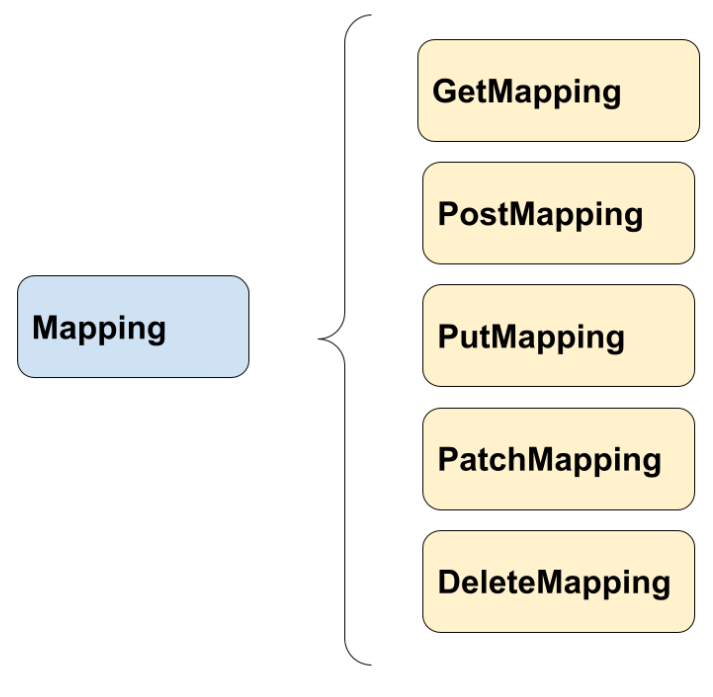

🌐 Spring API REST
⚕️¿Qué es una API?
Una API (Application Programming Interface) es una forma estandarizada de comunicar sistemas. Es decir, una API actúa como intermediario que permite que dos programas interactúen y compartan información o funcionalidades.
- 🧑💻 Un programa pide algo (request)
- 🧠 Otro programa lo procesa
- 📦 Devuelve una respuesta (response)
Las APIs son esenciales en el desarrollo moderno, ya que permiten integrar servicios como pagos, mapas, redes sociales, etc.
🧭 ¿Qué es una API REST?
REST (Representational State Transfer) es un estilo para diseñar APIs utilizando el protocolo HTTP. REST es un estilo de arquitectura que define cómo se deben estructurar y consumir las APIs para que sean eficientes, simples y escalables. Son ampliamente utilizadas en el desarrollo de software moderno.
A menudo se puede ver el nombre de API RESTful, RESTful es un adjetivo que describe a las APIs que siguen los principios y restricciones de la arquitectura REST.
✅ Ideas clave:
- 🌍 Usas HTTP (como un navegador)
- 📦 Trabajas con recursos (Users, Matches, Cabinets…)
- 🧱 Recursos identificados por URLs. Las URLs representan recursos (datos).
- 🔁 Las operaciones se expresan con métodos HTTP (GET, POST, PUT, DELETE…). Se identifican mediante direcciones únicas o endpoints.
- 🧾 Representación de recursos: la información se intercambia en un formato específico, generalmente JSON
📌 REST no es una librería: es un conjunto de reglas/convenciones.
🔗 ¿Qué es un endpoint?
Un endpoint es una URL concreta + un método HTTP que representa una acción sobre un recurso.
Ejemplos:
- GET /api/users/5 → obtener usuario 5
- POST /api/users → crear usuario
- DELETE /api/users/5 → borrar usuario 5
✅ Piensa en endpoints como “puertas” del servidor.
🧰 Tipos de endpoints
👀 Consultar (READ)
GET /api/users→ listaGET /api/users/{id}→ detalle
➕ Crear (CREATE)
POST /api/users→ crea uno nuevo
✏️ Actualizar (UPDATE)
PUT /api/users/{id}→ reemplaza todoPATCH /api/users/{id}→ cambia solo parte
🗑️ Borrar (DELETE)
DELETE /api/users/{id}→ elimina
🧪 Métodos HTTP
| Método | Uso típico | ¿Lleva body? |
|---|---|---|
| ✅ GET | Leer | ❌ No |
| ✅ POST | Crear | ✅ Sí |
| ✅ PUT | Reemplazar | ✅ Sí |
| ✅ PATCH | Actualizar parcialmente | ✅ Sí |
| ✅ DELETE | Borrar | ⚠️ Normalmente no |
- GET no debería cambiar el estado del servidor.
🚦 Códigos de estado HTTP (lo mínimo que hay que dominar)
| Código | Significado | Ejemplo |
|---|---|---|
| ✅ 200 OK | Todo bien | GET devuelve datos |
| ✅ 201 Created | Creado | POST crea recurso |
| ✅ 204 No Content | OK sin cuerpo | DELETE correcto |
| ❌ 400 Bad Request | Entrada inválida | email vacío |
| ❌ 404 Not Found | No existe | id no encontrado |
| ❌ 409 Conflict | Conflicto | email duplicado |
| ❌ 500 Server Error | Error interno | excepción no controlada |
🧱 ¿Cómo ayuda Spring Boot a crear APIs?
Spring Boot te da:
- 🧩 Anotaciones para declarar endpoints fácilmente
- 🔌 Inyección de dependencias (@Service → @RestController)
- 📥 Conversión automática JSON ↔ objetos Java
- ✅ Validación (Bean Validation con @Valid)
- 🧪 Facilita pruebas
⚕️Spring Web
El framework Spring ofrece el módulo Spring Web, que se utiliza para la creación de APIs REST. Este módulo proporciona las herramientas y anotaciones necesarias para construir y exponer endpoints RESTful.
En Spring, cada petición HTTP que llega a la API se atiende con un hilo del servidor (Tomcat, normalmente). Cuando un cliente llama a un endpoint, el servidor asigna un hilo libre del pool, ese hilo ejecuta el método del @RestController, llama al Service y al Repository, devuelve la respuesta y se libera para atender otra petición.
No es “un hilo por endpoint”, sino un hilo por petición, y Spring gestiona todo esto automáticamente, sin que tengas que crear hilos tú.
⚕️Componentes de Spring para crear una API REST
- Controladores REST: los controladores son los responsables de manejar las solicitudes HTTP y devolver las respuestas adecuadas.
- Anotaciones clave:
@RestController: marca una clase como controlador REST. Combina @Controller y @ResponseBody, indicando que los métodos devolverán datos directamente (en formato JSON o XML) en lugar de vistas HTML.@RequestMapping: define la ruta de acceso base para los endpoints de un controlador.- Métodos específicos:
@GetMapping: solicitudes HTTP GET@PostMapping: solicitudes HTTP POST@PutMapping: solicitudes HTTP PUT@DeleteMapping: solicitudes HTTP DELETE@PatchMapping: solicitudes HTTP PATCH
- Serialización y Deserialización: Spring utiliza Jackson de forma predeterminada para convertir objetos Java a JSON y viceversa. Es decir, un objeto
Usuariopuede enviarse como respuesta en formato JSON automáticamente. - Inyección de Dependencias y Servicios: los controladores suelen delegar la lógica de negocio a las clases servicio, marcadas con
@Service, para mantener el código modular y limpio.
Note
Jackson es una biblioteca Java para trabajar con datos en formato JSON. Se utiliza para la serialización (convertir objetos Java a JSON) y la deserialización (convertir JSON a objetos Java). Viene configurada por defecto en Spring para el intercambio de datos en APIs REST.
🧩 Cómo crear un controlador rest en Spring: @RestController
El primer paso para crear un ‘controlador rest’ es anotar la clase que con @RestController.
Con esto Spring ya sabe que esa clase será un componente encargado de recibir llamadas.
En la clase también podemos definir la ruta raíz por la cuál partirán las llamadas externas con la anotación @RequestMapping.
import org.springframework.web.bind.annotation.*;
@RestController
@RequestMapping("/api/users")
public class UserController {
private final UserService userService;
public UserController(UserService userService) {
this.userService = userService;
}
// ✅ GET /api/users/5
@GetMapping("/{id}")
public User getOne(@PathVariable Long id) {
return userService.getById(id);
}
}
🧠 Service (lógica)
@Service
public class UserService {
private final UserRepository repo;
public UserService(UserRepository repo) { this.repo = repo; }
@Transactional(readOnly = true)
public User getById(Long id) {
return repo.findById(id)
.orElseThrow(() -> new NotFoundException("User no existe"));
}
}
📌 Separación:
- 🌐 Controller: HTTP
- 🧠 Service: caso de uso
- 🗃️ Repository: BD
🧾 @RequestMapping y los @*Mapping
- 📌
@RequestMapping("/api/users")→ ruta base del controlador - ✅
@GetMapping,@PostMapping,@PutMapping,@DeleteMapping,@PatchMapping→ método HTTP + ruta

🧷 ¿Cómo llegan los datos a un endpoint?
🧩 a) Path variables (/users/{id})
@GetMapping("/{id}")
public User getOne(@PathVariable Long id) { ... }
🔎 b) Query params (/users?active=true)
@GetMapping
public List<User> list(@RequestParam(defaultValue="true") boolean active) { ... }
📦 c) Body JSON (POST/PUT/PATCH)
@PostMapping
public UserDto create(@RequestBody CreateUserRequest req) { ... }
🔆 Ejemplos de mapeo
@RestController
@RequestMapping("/api")
public class PersonController {
private final PersonService personService;//Inyección de dependencias
public PersonController(PersonService personService) {
this.personService = personService;
}
@GetMapping
public List<Person> getPersons() {
return personService.findAll();
}
@GetMapping("/person/{id}")
public Person byId(@PathVariable("id") Long id) {
return personService.find(id).orElseThrow();
}
@PostMapping("/person/")
public Person newPerson(@RequestBody Person person) {
return personService.create(person);
}
@PutMapping("/person/")
public Person update(@RequestBody Person person) {
return personService.update(person);
}
@PatchMapping("/person/")
public Person change(@RequestBody Person person) {
return personService.change(person);
}
@DeleteMapping("/person/{id}")
public boolean delete(@PathVariable("id") Long id) {
return personService.remove(id);
}
}
🧱 DTOs: lo normal es NO exponer entidades directamente
En APIs profesionales:
- ❌ No devuelves entidades JPA “tal cual”
- ✅ Usas DTOs/records para controlar lo que sale
📥 DTO de entrada (request)
public record CreateUserRequest(String email, String name) {}
📤 DTO de salida (response)
public record UserDto(Long id, String email, String name) {}
✅ Validación automática con @Valid
import jakarta.validation.constraints.*;
public record CreateUserRequest(
@NotBlank @Email String email,
@NotBlank @Size(min=2, max=40) String name
) {}
Controller:
@PostMapping
public UserDto create(@Valid @RequestBody CreateUserRequest req) { ... }
✅ Si el email está vacío → Spring devuelve 400 automáticamente.
📦 ResponseEntity para controlar status codes
@PostMapping("/users")
public ResponseEntity<UserDto> create(@Valid @RequestBody CreateUserRequest req) {
UserDto created = service.create(req);
return ResponseEntity
.status(HttpStatus.CREATED)
.header(HttpHeaders.LOCATION, "/api/users/" + created.id())
.body(created);
}
@DeleteMapping("/users/{id}")
public ResponseEntity<Void> delete(@PathVariable Long id) {
service.delete(id);
return ResponseEntity.noContent().build(); // 204 sin body
}
@GetMapping("/users/{id}")
public ResponseEntity<?> findById(@PathVariable(name = "id") Long id) {
Optional<User> userOptional = userService.findById(id);
if (userOptional.isPresent()) {
//return ResponseEntity.ok().body( userOptional.get());//200
//o es lo mismo
//return ResponseEntity.ok( userOptional.get());
return new ResponseEntity<User>(userOptional.get(), HttpStatus.OK);
}
//return ResponseEntity.notFound().build();
return ResponseEntity.status(HttpStatus.NOT_FOUND).body("User not found");
//return new ResponseEntity<>("the user does not exist.", HttpStatus.NOT_FOUND);
}
Otros:
- ResponseEntity.ok(dto) → 200
- ResponseEntity.noContent().build() → 204
- ResponseEntity.status(HttpStatus.CREATED).body(dto); // 201
- ResponseEntity.notFound().build(); // 404
Ejemplo completo de API Rest
//DTOs
public record CreateUserRequest(
@NotBlank @Email String email,
@NotBlank @Size(min = 2, max = 40) String name
) {}
public record UserDto(Long id, String email, String name) {}
public record UpdateUserRequest(
@NotBlank @Email String email,
@NotBlank @Size(min = 2, max = 40) String name
) {}
public record PatchUserRequest(
String email,
String name
) {}
```java file="UserService.java" @Service public class UserService {
private final UserRepository userRepository;
public UserService(UserRepository userRepository) { this.userRepository = userRepository; }
@Transactional public UserDto create(CreateUserRequest req) { // Regla de negocio: email único if (userRepository.existsByEmailIgnoreCase(req.email())) { throw new ConflictException("Ya existe un usuario con ese email"); }
User user = new User();
user.setEmail(req.email());
user.setName(req.name());
User saved = userRepository.save(user);
return toDto(saved);
}
@Transactional public void delete(Long id) { if (!userRepository.existsById(id)) { throw new NotFoundException("User " + id + " no existe"); } userRepository.deleteById(id); }
@Transactional(readOnly = true) public UserDto findById(Long id) { User user = userRepository.findById(id) .orElseThrow(() -> new NotFoundException("User " + id + " no existe")); return toDto(user); }
// ✅ PUT: reemplazo completo @Transactional public UserDto update(Long id, UpdateUserRequest req) { User user = userRepository.findById(id) .orElseThrow(() -> new NotFoundException("User " + id + " no existe"));
// email único (si cambia o aunque no cambie, esta comprobación es segura)
if (userRepository.existsByEmailIgnoreCaseAndIdNot(req.email(), id)) {
throw new ConflictException("Ya existe un usuario con ese email");
}
user.setEmail(req.email());
user.setName(req.name());
// no haría falta save() si la entidad está gestionada, pero no molesta:
User saved = userRepository.save(user);
return toDto(saved);
}
// ✅ PATCH: cambio parcial @Transactional public UserDto patch(Long id, PatchUserRequest req) { User user = userRepository.findById(id) .orElseThrow(() -> new NotFoundException("User " + id + " no existe"));
// Si viene email, validar y aplicar
if (req.email() != null) {
if (req.email().isBlank()) {
throw new BadRequestException("email no puede estar vacío");
}
if (userRepository.existsByEmailIgnoreCaseAndIdNot(req.email(), id)) {
throw new ConflictException("Ya existe un usuario con ese email");
}
user.setEmail(req.email());
}
// Si viene name, validar y aplicar
if (req.name() != null) {
if (req.name().isBlank()) {
throw new BadRequestException("name no puede estar vacío");
}
if (req.name().length() < 2 || req.name().length() > 40) {
throw new BadRequestException("name debe tener entre 2 y 40 caracteres");
}
user.setName(req.name());
}
User saved = userRepository.save(user);
return toDto(saved);
}
@Transactional(readOnly = true)
public UserDto findByEmail(String email) {
if (email == null || email.isBlank()) {
throw new BadRequestException("email es obligatorio");
}
User user = userRepository.findByEmailIgnoreCase(email)
.orElseThrow(() -> new NotFoundException("No existe el usuario con email " + email));
return toDto(user);
}
private static UserDto toDto(User u) { return new UserDto(u.getId(), u.getEmail(), u.getName()); } }
```java file="UserController.java"
@RestController
@RequestMapping("/api/users")
public class UserController {
private final UserService service;
public UserController(UserService service) {
this.service = service;
}
// POST /api/users -> 201 + Location + body
@PostMapping
public ResponseEntity<UserDto> create(@Valid @RequestBody CreateUserRequest req) {
UserDto created = service.create(req);
return ResponseEntity
.status(HttpStatus.CREATED)
.header(HttpHeaders.LOCATION, "/api/users/" + created.id())
.body(created);
}
// GET /api/users/{id} -> 200 o 404 (vía excepción)
@GetMapping("/{id}")
public ResponseEntity<UserDto> findById(@PathVariable Long id) {
return ResponseEntity.ok(service.findById(id));
}
// DELETE /api/users/{id} -> 204 o 404 (vía excepción)
@DeleteMapping("/{id}")
public ResponseEntity<Void> delete(@PathVariable Long id) {
service.delete(id);
return ResponseEntity.noContent().build();
}
// ✅ PUT /api/users/{id}
@PutMapping("/{id}")
public ResponseEntity<UserDto> update(
@PathVariable Long id,
@Valid @RequestBody UpdateUserRequest req
) {
return ResponseEntity.ok(service.update(id, req));
}
// ✅ PATCH /api/users/{id}
@PatchMapping("/{id}")
public ResponseEntity<UserDto> patch(
@PathVariable Long id,
@RequestBody PatchUserRequest req
) {
return ResponseEntity.ok(service.patch(id, req));
}
//Llamada: GET /api/users/by-email?email=patri@mail.com
@GetMapping("/by-email")
public ResponseEntity<UserDto> findByEmail(@RequestParam String email) {
return ResponseEntity.ok(service.findByEmail(email));
}
}